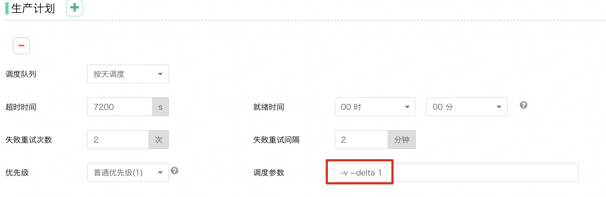

说明：依赖重导监测
概念说明：离线任务执行依赖的表，重新运行之前时间周期的数据称为【重导】；重导后，离线任务拉起对应周期的新数据运行，称为【重跑】
离线任务依赖分为2种表
- 驱动表：即数据源表（一般是业务表），数据就绪后驱动离线任务执行
- 特征表：生成离线特征的数据源表，特征可用来配置规则
以上2种表发生重导时，都可能会影响离线任务的执行结果，因此需要进行重导检测，如有必要系统可自动发起离线任务重跑
重导入库仅限「任务重导」https://data.sankuai.com/wanxiang/#/cantor/reloads/list入口，XT的「执行计划」无法进入检测范围
数据表配置规范
XT数据表生产逻辑中，时间参数偏移必须是1

重导逻辑说明：
-
如果上游表重导范围与当前正在运行的任务无交叉，则无需终止当前任务，重跑仅拉起重导范围对应的任务周期
- 举例：上游表重导周期为T-2到T-3，离线任务读取周期为T-1，则认为无交叉，当前离线任务不终止；并发起一个新离线任务重跑T-2到T-3周期的数据
-
如果上游表重导范围与当前正在运行的任务有交叉，则需终止当前任务，重跑拉起重导范围对应的任务周期
- 举例：上游表重导周期为T-1到T-3，离线任务读取周期为T-1，则认为有交叉，当前离线任务终止；并发起一个新离线任务重跑T-1到T-3周期的数据